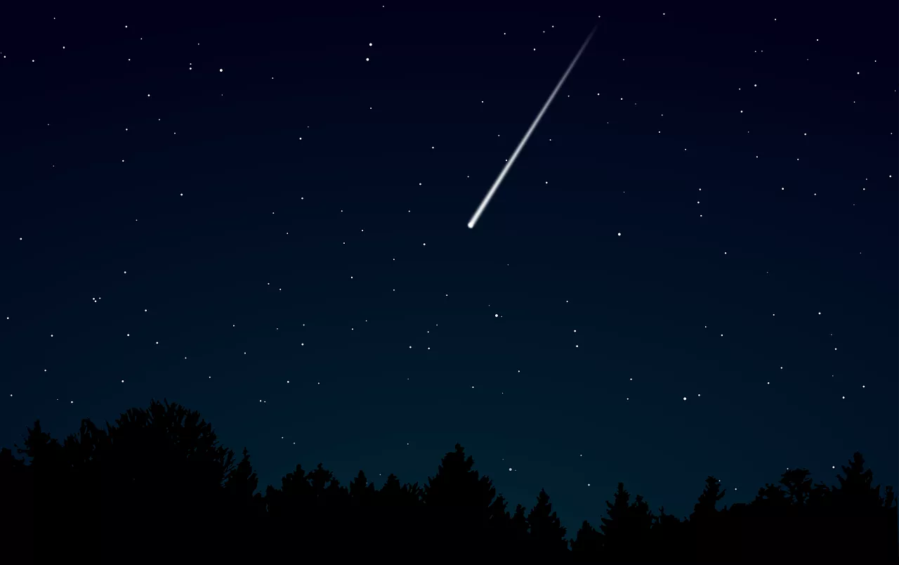

Meteoros
Popularmente conhecidos como estrelas cadentes, os meteoros são pequenos pedaços de poeira espacial (meteoroide) que estão queimando na atmosfera da Terra. Eles parecem bem pequenos, o que significa que é pouca poeira, e por isso sabemos que nunca vão chegar à superfície da Terra. Eles são inofensivos e viajam pela atmosfera a 48.280 km/h, chegando a temperaturas de 1.648ºC.Meteoritos
Quando meteoroides de fato chegam à superfície terrestre, são chamados de meteoritos. Embora a maioria seja bem pequena, eles podem chegar a 100 kg — tamanho suficiente para causar estragos por aqui.Asteroides
No Sistema Solar, há bilhoes de asteroides flutuando. Eles têm os mais variados tamanhos e formatos. Alguns são muito pequenos até para que sejam notados, outros são tão grandes que parecem planetas — Ceres tem 1.000 quilômetros de comprimento, por exemplo. Mas eles não conseguem ter uma atmosfera e são basicamente pedras que ficam em volta do Sol.Cometas
Cometas possuem três partes principais: o núcleo, a cabeleira e a cauda - e são formados principalmente de rocha, poeira e gelo. Assim como também, possuem três tipos de órbitas, que se desenvolvem na viagem até o Sistema Solar.1. Núcleo:
Todos os fenômenos que ocorrem no cometa têm origem a partir de seu núcleo. Ele é feito de gelo (um gelo bem sujo) e pode pesar de um quilo a algumas dezenas de toneladas. Ao se aproximar do Sol, o núcleo dá origem à cabeleira e à cauda do cometa. Por ser um corpo pequeno (de baixa atração gravitacional) e se movimentar muito rápido, a cada passagem perto do enorme calor do Sol o núcleo gelado derrete e a cauda do cometa aumenta. Até que, um dia, o núcleo se desgasta completamente e o cometa "morre".2. Cabeleira:
ela é mais brilhante do que a cauda. A presença predominante de componentes simples, à base de hidrogênio e oxigênio, revela que a maior parte da constituição do cometa é água em dois estados: o sólido (gelo) e o gasoso (vapor de água). É na cabeleira do cometa, a parte que lembra a juba do leão, que a água está em estado gasoso.3. Cauda:
Os cometas possuem dois tipos de caudas: uma feita de poeira neutra e a outra de elétrons e gases ionizados. A primeira tem cor amarelada que reflete a luz solar. A segunda é azulada, produzida principalmente pelo CO (monóxido de carbono). A cauda é formada pela pressão eletromagnética (exercida pelos raios solares) e pelo vento solar. A cabeleira e a cauda têm em média, de 10 mil a 100 milhões de vezes o diâmetro do núcleo.